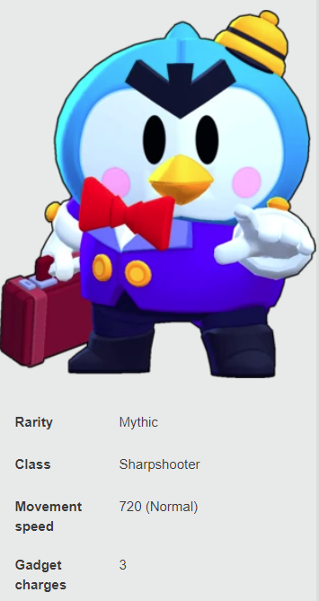
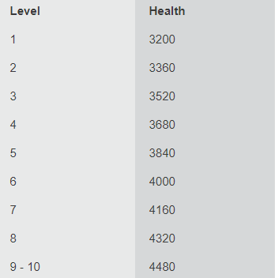
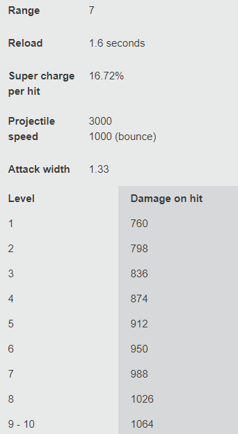

Brawler
Mr. P is a disgruntled luggage handler who angrily hurls suitcases at opponents. His Super calls robo-porters to help him.

Health
Gadget
Mr. P buffs his current porter by increasing its damage by 150 and health by 1000.
Gadget
The next attack will spawn an extra porter where the attack lands.
Star Power
Mr. P's overstuffed suitcases bounce and burst even if they don't hit a target or obstacle.
Star Power
The robo-porters spawn 3 seconds faster after being defeated.
Attack
Mr. P throws a heavy suitcase with angry intent. If the suitcase hits an obstacle or an opponent, it bounces over them, lands with a bang and deals area damage.

Super
Mr. P deploys the home base for his robo-porters. He has reprogrammed the small penguin-head robots to attack and harass opponents (and unruly guests).